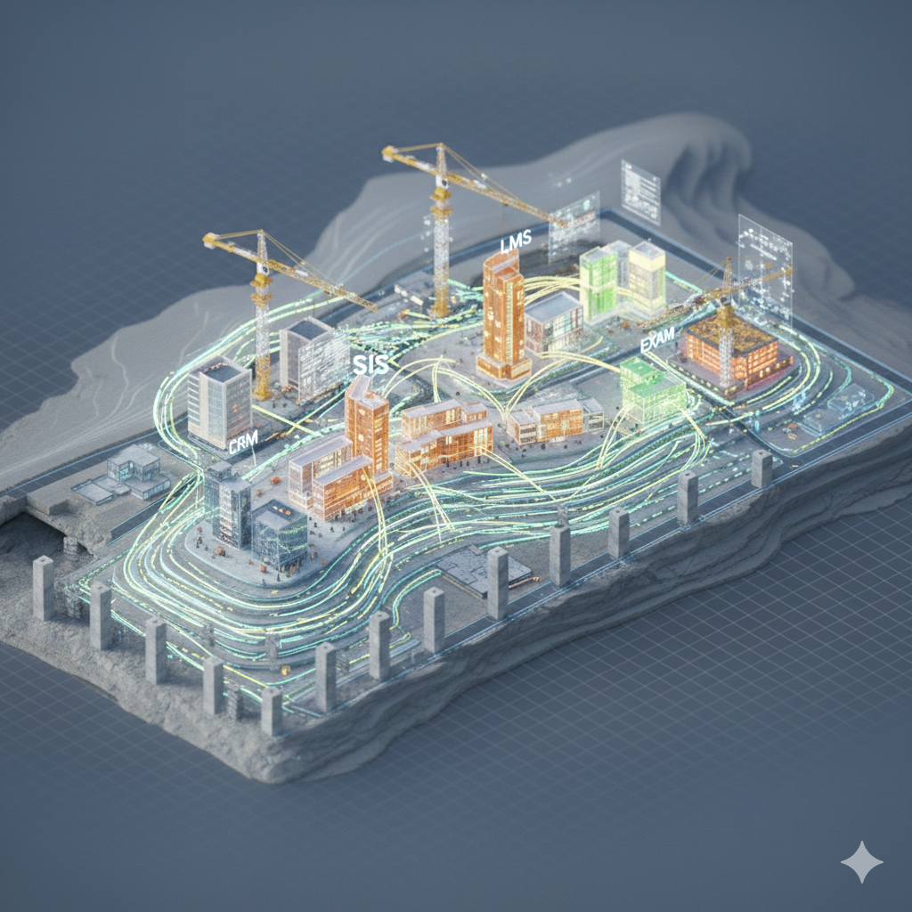

De la intencion a la gobernanza
¿Como transformar sin romper la organizacion?

Simulacion individual: cada participante enfrenta 10 decisiones estrategicas bajo presion, representando una organizacion en crisis.
La transformacion digital no es un proyecto de tecnologia. Es la interseccion de tres dimensiones.
Liderazgo visible, apertura al cambio
Sin ella: la tecnologia no se usa
Rediseno real del trabajo
Sin ella: se automatiza lo ineficiente
Arquitectura, integracion, escalabilidad
Sin ella: la estrategia no se ejecuta
Si falta una dimension, el sistema colapsa.
Redefinir donde y como compite la organizacion en el mundo digital
Equipos pequenos, autonomos, con mandato claro y capacidad de decidir rapido
Arquitectura moderna, datos integrados, capacidad de iterar sin romper todo
Los datos como activo estrategico, no como subproducto de la operacion
Lideres que modelan el cambio, equipos con nuevas capacidades, una cultura que aprende
Partnerships, plataformas y terceros que amplian capacidades sin construir todo internamente
de las transformaciones digitales
no alcanzan sus objetivos
Menos de 1 de cada 3 proyectos entrega el valor prometido.
— McKinsey / Gartner
El patron mas comun: se invierte en tecnologia, se ignoran cultura y procesos, y se mide el exito por “cuanto se implemento” en vez de “cuanto cambio el resultado”.
Basado en el Framework R'Evolution 2026
Sin estructura, la IA se vuelve improvisacion.
La IA no es un proyecto independiente. Es una capacidad que se integra en cada proceso existente.
La IA toma decisiones que antes tomaban personas. Cuando un algoritmo decide que estudiante recibe una beca, que candidato avanza en un proceso de seleccion, o que alumno es marcado como “en riesgo de desercion”, esas decisiones tienen consecuencias reales.
Ejemplo: sesgo en admisiones
Una institucion educativa implementa IA para predecir que postulantes tienen mas probabilidad de completar la carrera. El modelo aprende patrones historicos y concluye que ciertos codigos postales predicen abandono. La institucion empieza a rechazar postulantes de esas zonas — sin saberlo, esta discriminando por nivel socioeconomico.
Pregunta para llevarse:
Si tuvieras que elegir un solo proceso de tu organizacion para modernizar en los proximos 6 meses — uno que genere impacto real en la experiencia del estudiante o en la eficiencia operativa — ¿cual seria? ¿Que necesitarias para empezar?
Modulo 04 — Transformacion Digital e IA